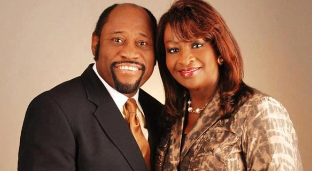

Dr.Myles Munroe
Evangelist, author, speaker, leadership coach and ordained minister of the Word of God.

Dr.Myles Munroe and his wife Ruth Munroe
The life of Dr.Myles Munroe:
- Born - 20th April 1954 in Nassau, Bahamas
- Childhood and Education - Raised in a poor family of eleven children and received salvation as a teenager. He received a Bachelor of Fine Arts, Education and Theology from Oral Roberts University (ORU) in 1978, a Master's degree in Administration from the University of Tulsa in 1980, more honorary doctoral degrees from various schools and served as a professor at the Graduate School of Theology at ORU.
- Personal life - Married Ruth Munroe in 1978, had two children Chairo Myles Jr. and Charisa Myles.
- Ministry - Evangelist, author, speaker, leadership consultant and founder of the Bahamas Faith Ministries International. He was the CEO and board chairman of the International Third World Leaders Association, and president of the International Leadership Training Institute.
- Books - Understanding the Purpose and Power of Men
Understanding the Purpose and Power of Woman
The Most Important Person on Earth
Purpose and Power of Love and Marriage
The Fatherhood Principle
Myles Munroe on Relationship
The Burden of Freedom
Waiting and Dating
Kingdom Parenting - Died - 9th November 2014 in a private plane crash with his wife and eight others at a ship yard near Grand Bahama International Airport en route to Freeport, Grand Bahama for a conference.
“The greatest tragedy in life is not death, but a life without a purpose.” -- Myles Munroe
For more information about this man of God, follow this wikipedia link.